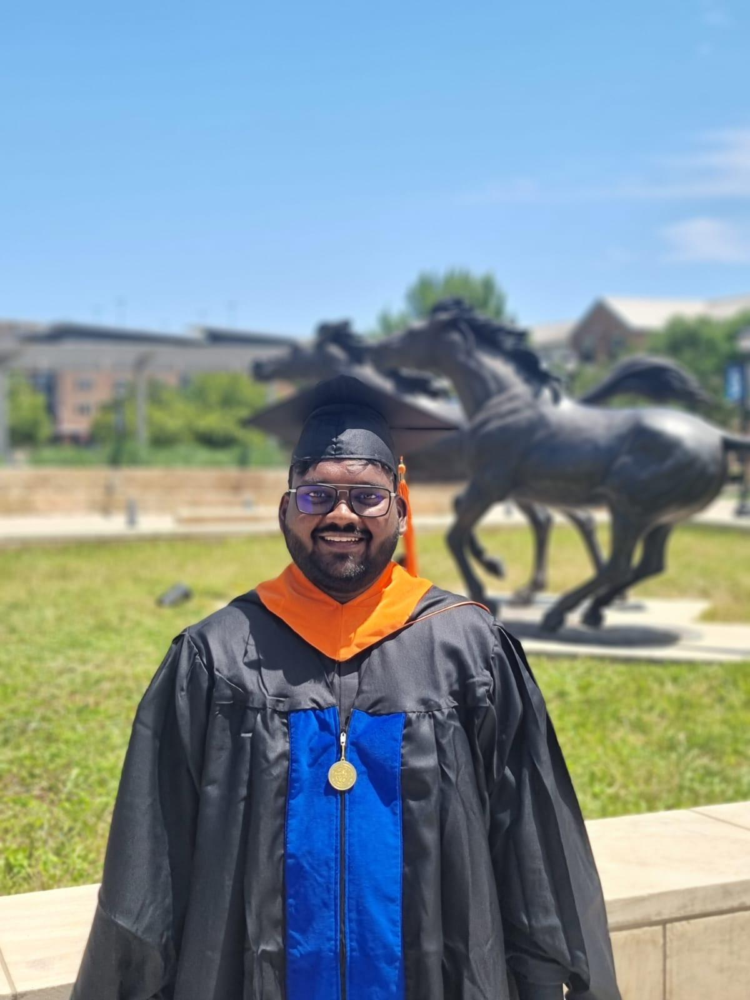

Project Engineer
Email: maheshpaluru03@gmail.com | Phone: 682-699-7335
Hi! I am Uma Mahesh Paluru, a passionate Project Engineer with a Master's degree in Construction Management from the University of Texas at Arlington.
Master’s degree in Construction Management (Aug 2022 - May 2024)
Bachelor’s in Civil Engineering (Aug 2017 - Aug 2021)
Project Engineer (June 2020 – July 2022)
Trainee (June 2019 – Aug 2019)
Role: Project Engineer
Description: Led the design and construction of a high-rise building, ensuring structural integrity and material optimization.
Role: Project Engineer
Description: Managed the construction of a new bridge and rehabilitation of an existing one, ensuring compliance with safety standards.